Anikait Singh
I'm a third year Ph.D student at Stanford AI advised by Chelsea Finn and Aviral Kumar. Previously, I was at UC Berkeley advised by Sergey Levine. I was a research scientist intern at Microsoft Research NYC, Google DeepMind Robotics, and Toyota Research Institute. My research is supported by the NSF Graduate Research Fellowship.
Overview
My research develops algorithms for self-improving and creative foundation models, with the long-term goal of enabling progress on difficult, open-ended problems such as scientific research. In these settings, success cannot be reduced to imitating demonstrations or optimizing narrowly specified answers; it requires models to identify promising directions, synthesize evidence, form useful abstractions, and refine ideas whose value may only emerge through downstream validation. I study how to induce these capabilities through feedback loops that turn a model’s own attempts, natural-language critiques, and inference-time computation into signals for learning and exploration. The aim is to move beyond static imitation toward models that can generate, evaluate, and improve candidate insights, thereby learning problem-solving strategies that transfer across domains.
Research
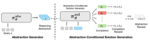
This paper presents RL for Abstraction Discovery (RLAD), a multi-agent RL method for LLMs to discovers novel "reasoning abstractions" to guide problem solving. This approach can improve the diversity of reasoning strategies explored and steer solution-generators towards useful parts of the solution space for harder problem settings where exploration is required.
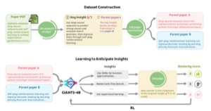
This paper presents GIANTS-4B, an LM trained via reinforcement learning (RL) to optimize insight anticipation by predicting a downstream paper's core contribution from summaries of its foundational parent papers. This approach significantly outperforms frontier models at generating feasible, high-quality scientific insights and successfully zero-shot generalizes its synthesis capabilities across diverse, unseen scientific disciplines.
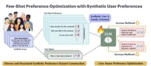
As language models increasingly interact with a diverse user base, it becomes important for models to generate responses that align with individual user preferences. Few-Shot Preference Optimization (FSPO) is a meta-learning framework that leverages the strong in-context learning capabilities of an LLM to capture the diversity of human preferences.
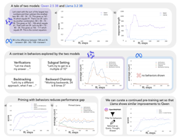
This study demonstrates that a language model's intrinsic reasoning behaviors—such as verification, backtracking, subgoal setting, and backward chaining—are key to its ability to self-improve under reinforcement learning.
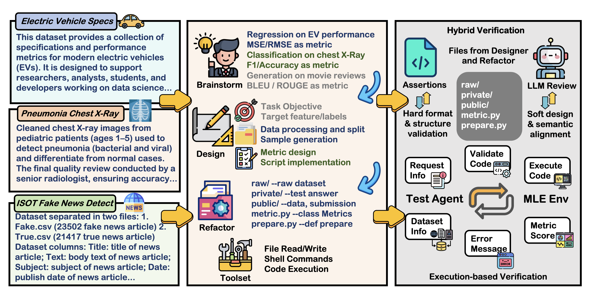
This paper introduces MLE-Smith, a fully automated multi-agent generate–verify–execute pipeline that converts raw datasets into competition-style MLE tasks by combining structured task generation (Brainstormer/Designer/Refactor), hybrid verification (deterministic checks + agent review), and execution-based validation to ensure structural integrity, semantic soundness, and empirical solvability at scale.
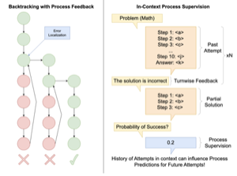
This paper introduces a novel approach combining process verifiers with preemptive backtracking to efficiently identify and resample problematic steps, significantly reducing computation through focused revisions and in-context process supervision.
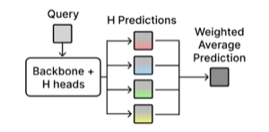
We introduce HyRe, a test-time adaptation framework that trains a single neural network with multiple prediction heads—each encoding a different behavior consistent with the training data—and dynamically reweights them using a small set of labeled examples from the target distribution. With only five preference pairs per distribution, HyRe scales to large pretrained models at roughly the cost of fine-tuning one model and outperforms prior state-of-the-art 2B-parameter reward models across 18 personalization and distribution-shift scenarios.
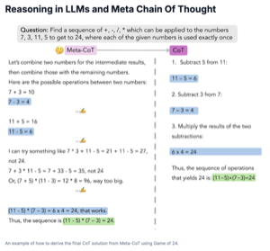
We propose a novel framework, Meta Chain-of-Thought (Meta-CoT), which extends traditional Chain-of-Thought (CoT) by explicitly modeling the underlying reasoning required to arrive at a particular CoT. We present empirical evidence from state-of-the-art models exhibiting behaviors consistent with in-context search, and explore methods for producing Meta-CoT via process supervision, synthetic data generation, and search algorithms.
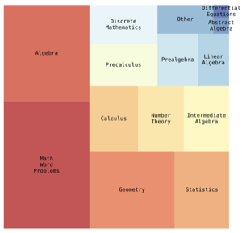
Big-Math is a dataset of over 250,000 high-quality, verifiable math questions created for reinforcement learning that bridges the gap between quality and quantity by rigorously filtering existing datasets and introducing 47,000 new reformulated questions, offering greater diversity and varying difficulty levels compared to commonly used alternatives like GSM8k and MATH.
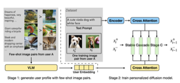
PPD is a multi-reward optimization approach that personalizes text-to-image diffusion models by extracting user preference embeddings from a few examples and incorporating them via cross-attention during DPO fine-tuning, enabling effective generalization to unseen users with as few as four preference examples.
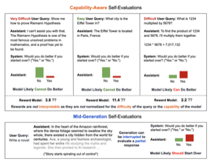
This paper proposes a generative self-evaluation scheme enabling large language models (LLMs) to internally predict mid-generation whether restarting would yield improved responses, significantly reducing computational costs by adaptively limiting sample generation. Experiments show this method achieves most of the performance gains of extensive multi-sample generation (e.g., increasing Llama 3.1 8B's win rate against GPT-4 from 21% to 34%) with dramatically fewer samples and minimal overhead.
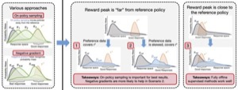
Learning from preferences is a common paradigm for fine-tuning language models. Yet, many algorithmic design decisions come into play. Our new work finds that approaches employing on-policy sampling or negative gradients outperform offline, maximum likelihood objectives.
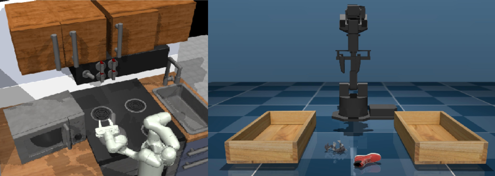
Offline RL algorithms enable data-driven methods without the need for costly or dangerous real-world exploration, leveraging large pre-collected datasets. However, effective and challenging benchmarks that capture real-world task properties are necessary for evaluating progress, prompting the proposal of a new benchmark for offline RL based on realistic robotic simulations and diverse data sources to support both offline RL and online fine-tuning evaluation.
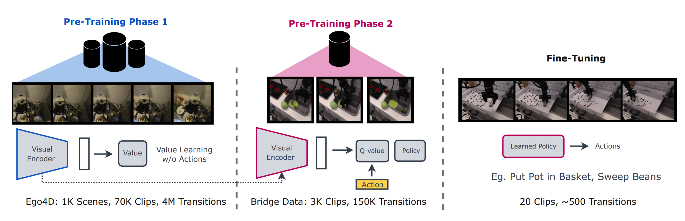
VPTR is a framework that combines the benefits of pre-training on video data with robotic offline RL approaches that train on diverse robot data, resulting in value functions and policies for manipulation tasks that are robust and generalizable.
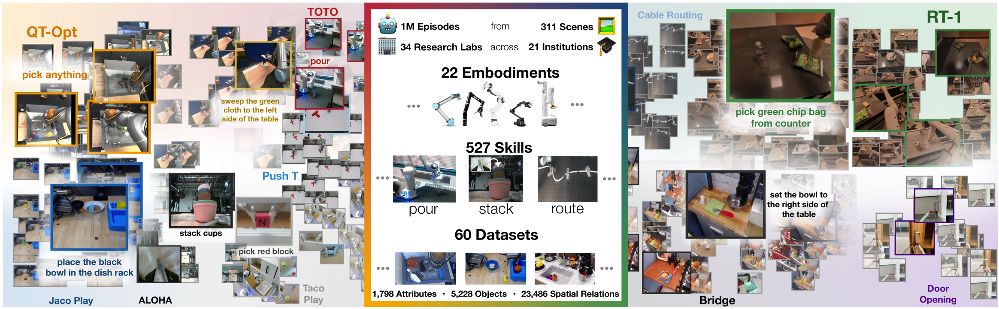
This is an opensource dataset comprised of a large collection of robot embodiments. We study how vision-language models trained on X-Embodiment Datasets can enable efficient adaptation to new robots, tasks, and environments.
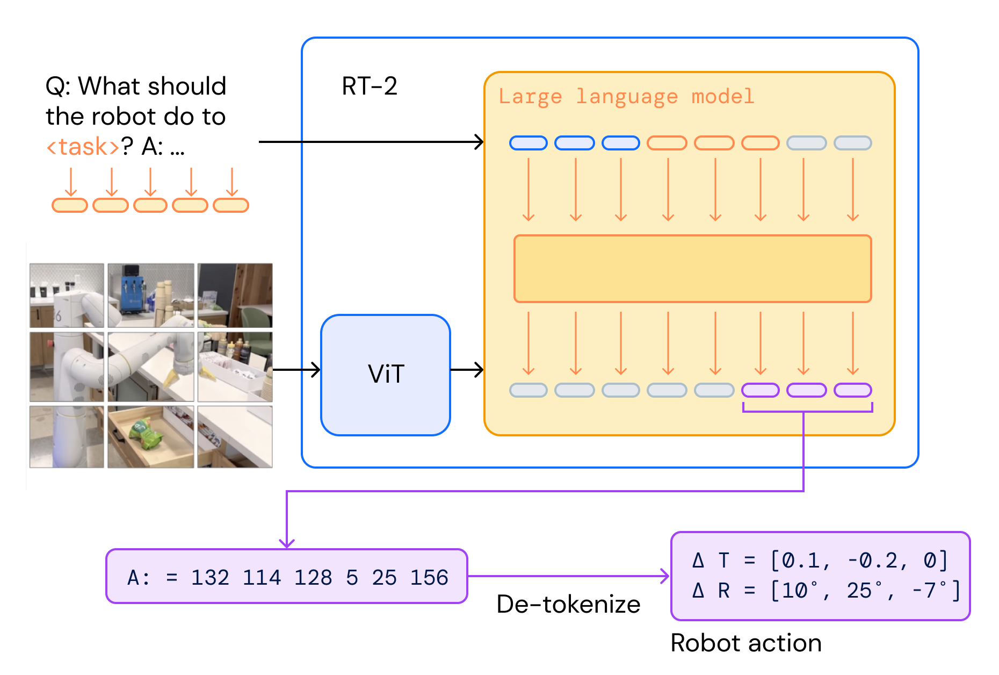
We study how vision-language models trained on Internet-scale data can be incorporated directly into end-to-end robotic control to boost generalization and enable emergent semantic reasoning.
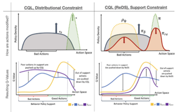
CQL (ReDS) is an offline RL method that modifies a typical distribution constraint into an approximate support-level constraint via re-weighting to enable efficient learning from heteroskedastic dataset compositions.
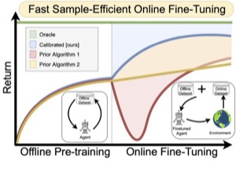
A method that learns a conservative value function initialization that underestimates the value of the learned policy from offline data, while also being calibrated, in the sense that the learned Q-values are at a reasonable scale. This leads to effective online fine-tuning, enabling benefits of offline initializations in online fine-tuning
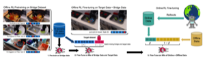
PTR is a framework based on offline RL that attempts to effectively learn new tasks by combining pre-training on existing robotic datasets with rapid fine-tuning on a new task, with as few as 10 demonstrations.
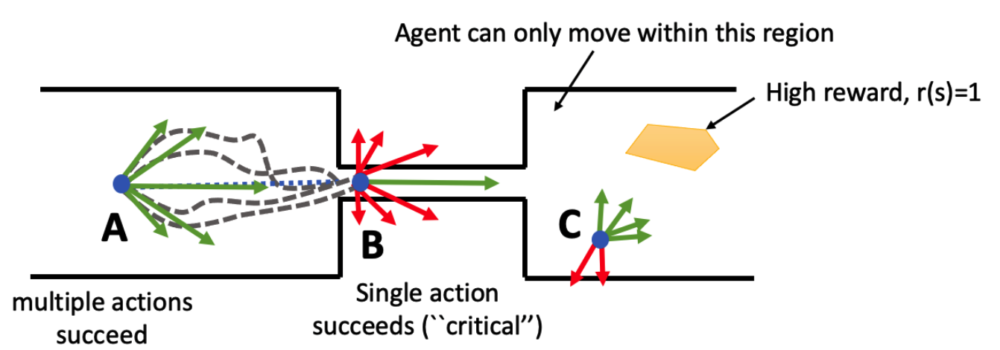
Theoretical paper that characterize the properties of environments that allow offline RL methods to perform better than BC methods, even when only provided with expert data. Additionally, policies trained on sufficiently noisy suboptimal data outperform BC algorithms with expert data, especially on long-horizon problems.
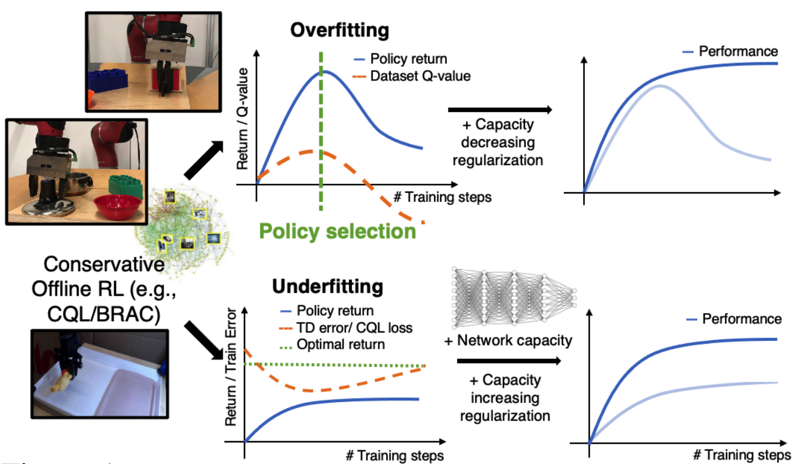
Our proposed workflow aims to detect overfitting and underfitting in model-free offline RL, and provides guidelines for addressing these issues via policy selection, regularization, and architecture design.
Teaching
Graduate Student Instructor, CS224r Spring 2025/Spring 2026
Program Coordinator, Mentor, Deep Learning Portal 2024
Undergraduate Student Instructor, CS285 Fall 2022/Fall 2021
Undergraduate Student Instructor, CS188 Spring 2022